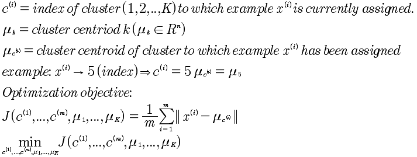

Lesson13 聚类
13-1 非监督学习
监督学习和非监督学习的区别在于，监督学习的每个数据是有标签，例如是0 还是 1，是有效还是无效; 而非监督学习的数据是没有标签的，由程序自动产生分类。因此对于，非监督学习的训练集来说，就不会写y，因为y就是标签。
训练集: {x^(1) , x^(2) , ... ,x^(m) }
第一个学习的是聚类算法，进行探查数据的内部结构。
13-2 K均值算法(K-means)
K均值算法:
Input Arg 1: K, (分成的聚类的数量) Input Arg 2: 训练集 {x^(1), x^(2), ..., x^(m)} x^(i) ∈ R^n (x0 = 1)
执行:
随机初始化K簇中心u1, u2, ..., uK ∈ R^n
循环 { for j = 1 to K for i = 1 to m c = ||xi - uj|| 最小的c,是当j=n, 将xn归为j的簇
// 重新分配中心
for k = 1 to K
uk = 所有属于K簇的计算平均值
}
// 特殊情况，如果某个簇没有点，那么将会将这个簇删除掉，就变成了K-1个簇。
思考，监督学习与非监督学习的其他区别，是用途区别，非监督学习能够对所有数据进行分类，然后再打上标签。而监督学习是打上标签之后，再研究其中的曲线拟合。
13-3 优化目标

13-4 随机初始化
现在的问题是避免局部最优化。基本思想是，进行多次的随机初始化K，而选择min(J)的那个K值。
for i = 1 to 100 {
随机初始化 K均值 中心点
运行K均值算法，得到 c,u
计算代价函数: J(c, u)
}
选择minJ(c,u)，所计算出的值。
如果K属于2-10这个规模，会得到较好的效果；而如果K很大，那么，其实后面的优化并非能得到更多好的优化结果。
13-5 选择簇的数量
对于K的数量的选择，一是肘部分析法；二是根据商业规则来设定。
肘部分析，是将K=1，2，3，... 和J，找到拐点，但是这不总是有效的。所以，从商业角度分析可能更好。